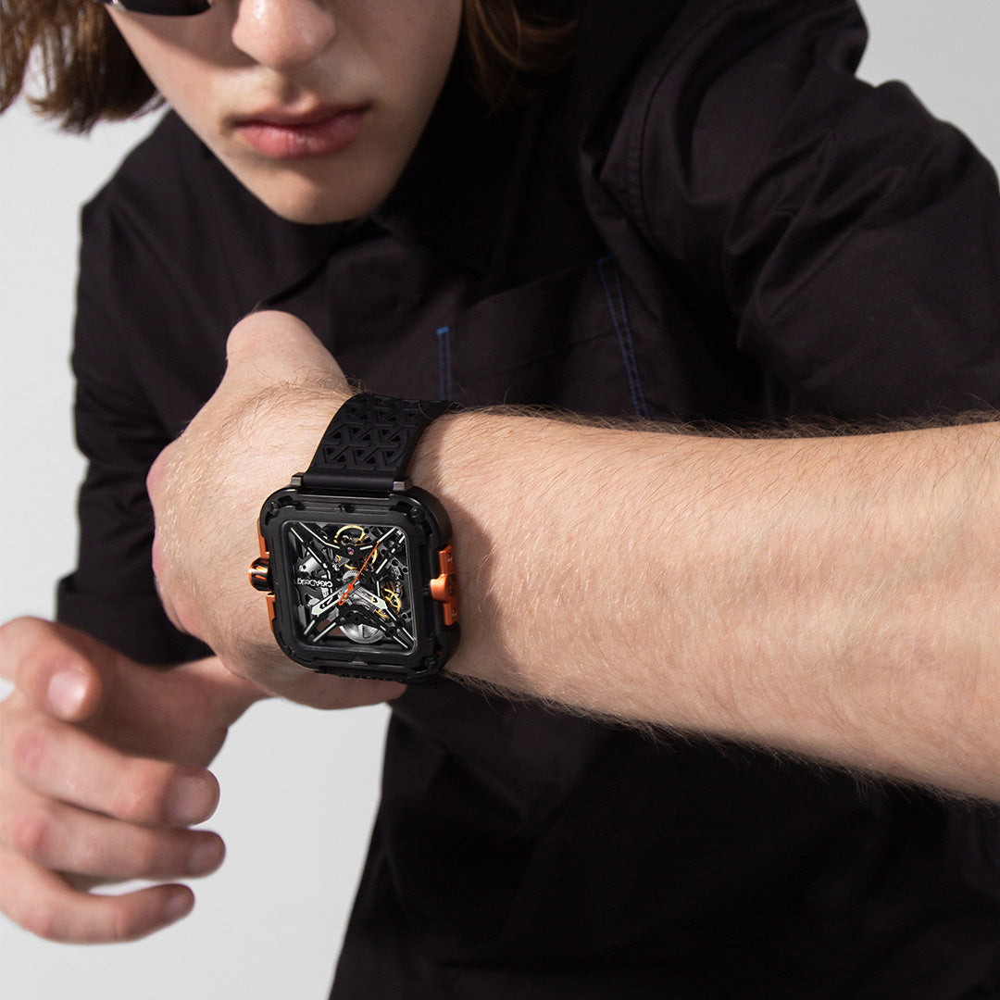
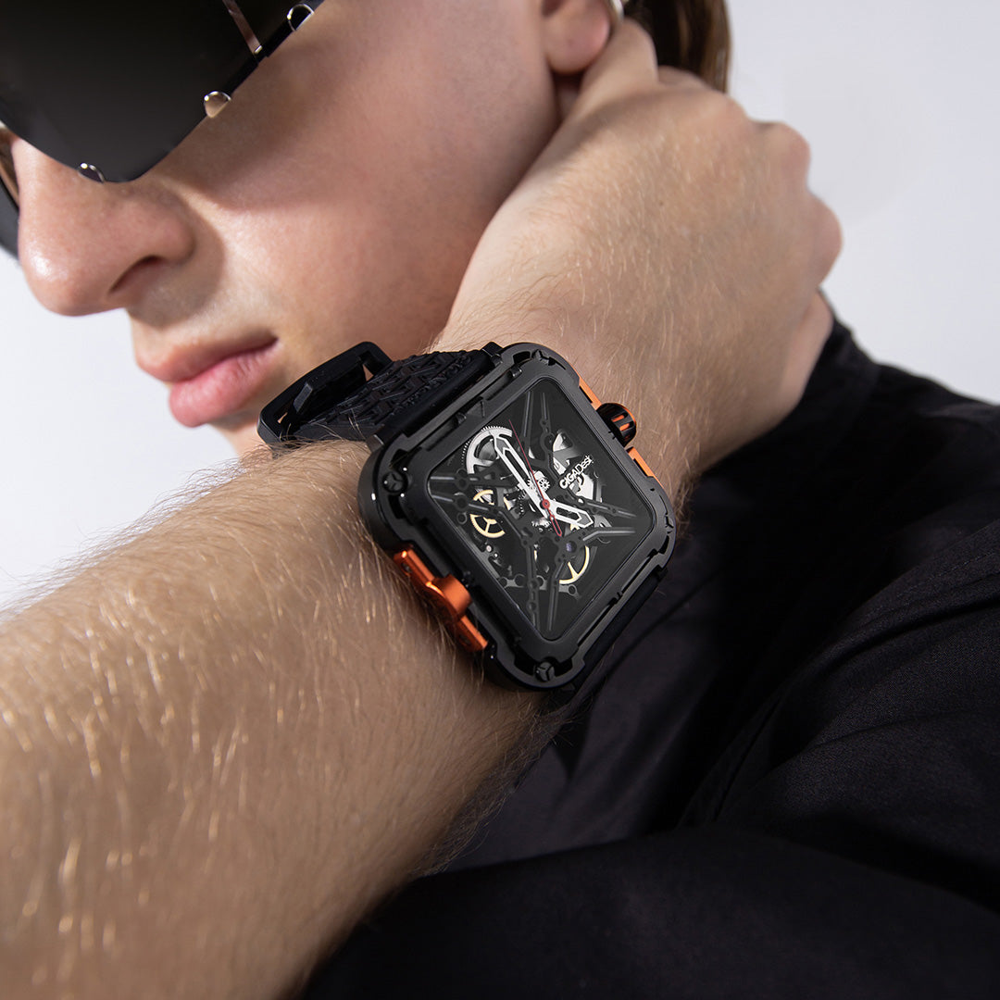
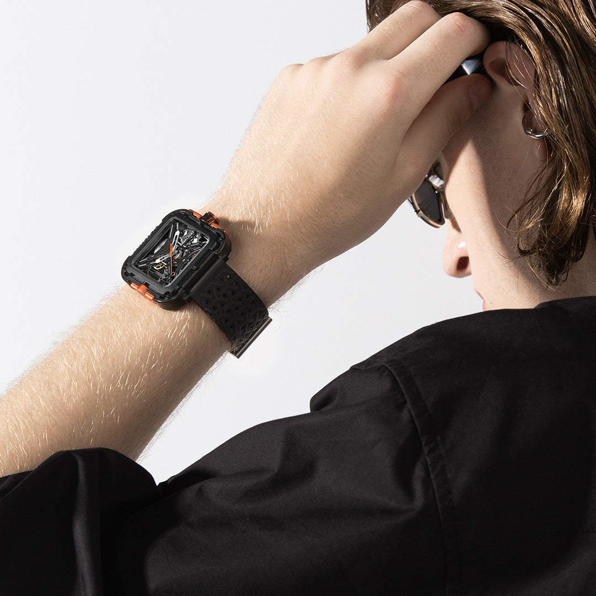
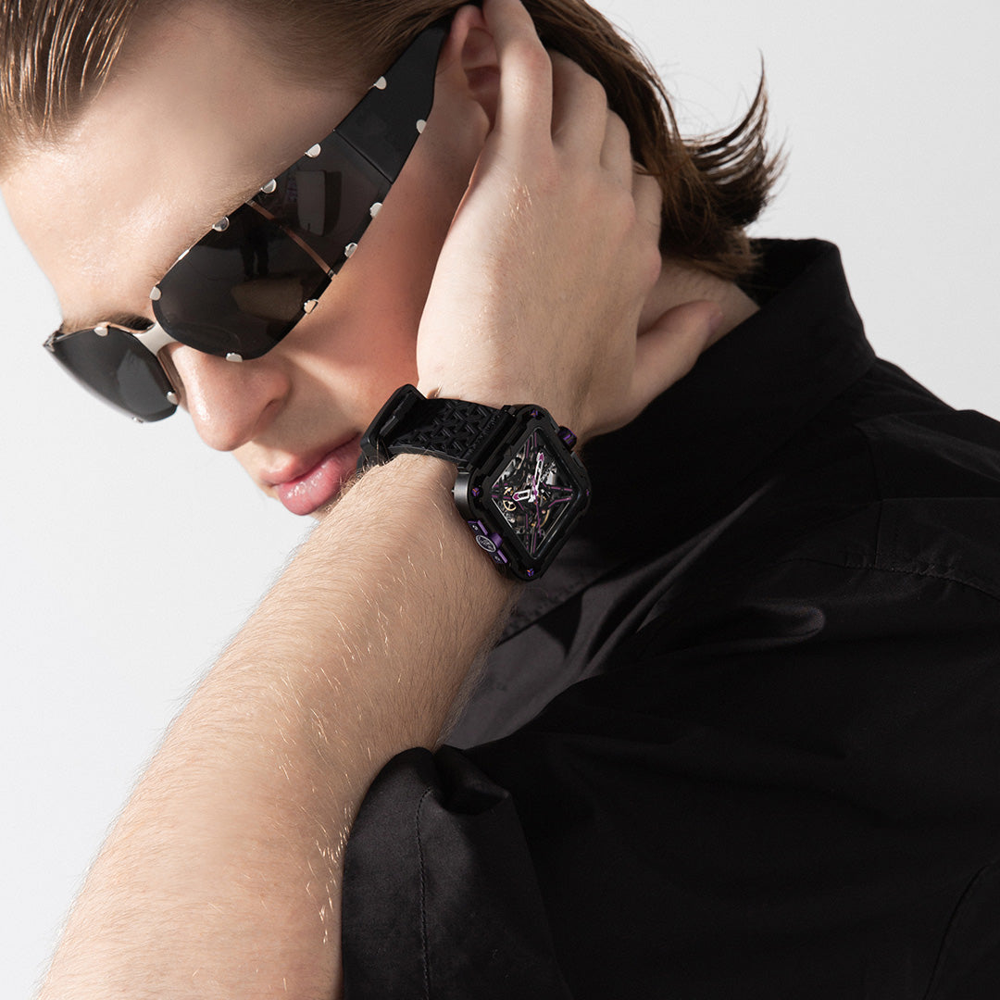
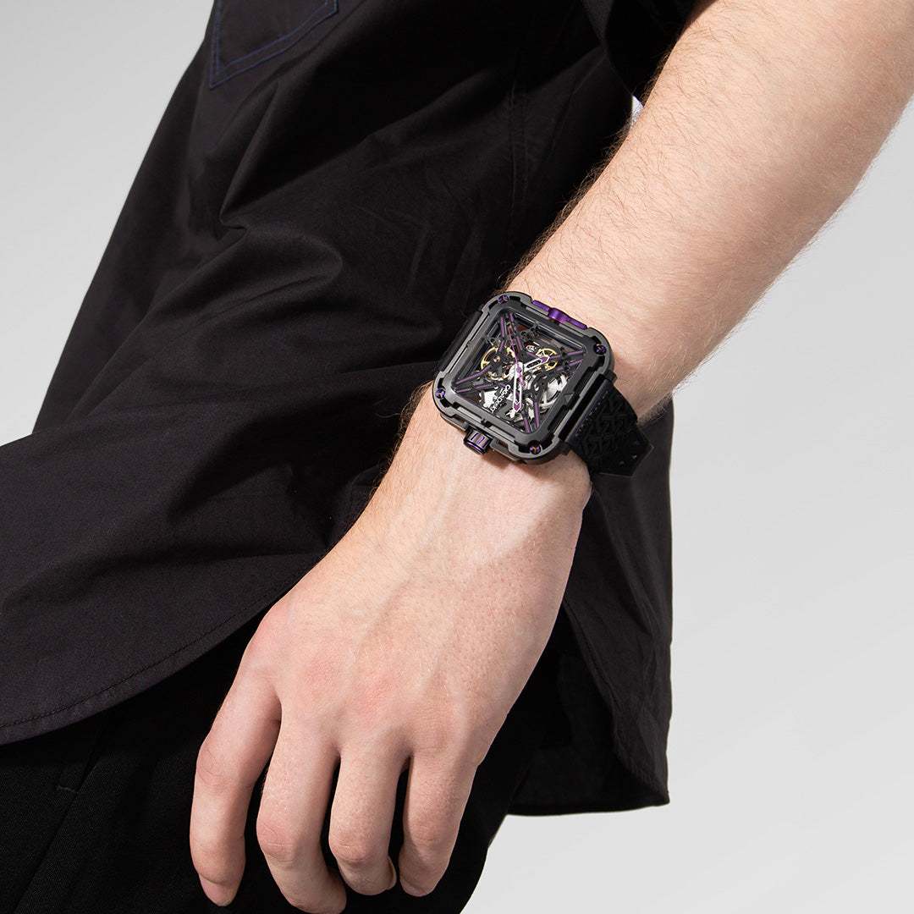

O Gorilla trabalha força visual e engenharia de proteção a partir de uma caixa suspensa em quatro pontos, aço 316L e acabamento DLC de leitura mais técnica e industrial.
Suspensão estrutural nos 4 cantos, design e função em equilíbrio
O Gorilla é um relógio construído para quem valoriza proteção estrutural e presença física, sem abrir mão do refinamento mecânico.

O diferencial do Gorilla está na forma como a caixa parece flutuar dentro da estrutura externa. A proposta visual comunica proteção e tensão mecânica ao mesmo tempo, com leitura bem diferente de um relógio esportivo convencional.
O revestimento DLC reforça essa linguagem ao adicionar profundidade visual, contraste e sensação de superfície técnica. É um recurso coerente com o posicionamento do modelo, sem precisar prometer invulnerabilidade.

O movimento automático CD-01 trabalha dentro dessa arquitetura mais protegida, com 21.600 semi-oscilações por hora e 25 joias. O valor do Gorilla está mais na coerência entre construção e linguagem do que em transformar a peça em instrumento extremo.
O mostrador em relevo com textura inspirada na pele do gorila reforça a identidade do relógio em qualquer ângulo. Os ponteiros tratados com Super-LumiNova garantem legibilidade em ambientes de baixa luminosidade, completando um relógio que não concede em nenhum detalhe.
Caixa interna suspensa nos 4 cantos cria amortecimento estrutural para o movimento sem componentes de borracha.
O acabamento DLC reforça o aspecto técnico do modelo e ajuda a sustentar sua identidade visual escura e robusta.
Calibre automático com 25 joias e 21.600 vph. Protegido pela suspensão estrutural de 4 cantos.
Ponteiros tratados com luminescente de alta performance. Leitura de hora garantida em qualquer condição de luz.
Aço DLC, suspensão de 4 cantos e movimento automático, engenharia de proteção em cada detalhe.

| Tamanho da Caixa | 44 mm |
| Espessura | 11,8 mm |
| Material da Caixa | Aço cirúrgico 316L com revestimento DLC |
| Vidro | Cristal de safira anti-reflexo |
| Fundo | Transparente de safira |
| Movimento | CIGA CD-01 automático |
| Frequência | 21.600 semi-oscilações/h (3 Hz) |
| Reserva de Marcha | ≥ 40 horas |
| Joias | 25 rubis |
| Resistência à Água | 3 ATM (30 metros) |
| Pulseira | Couro genuíno com costura dupla |
| Largura da Pulseira | 22 mm |
| Sistema Especial | Suspensão de 4 cantos, amortecimento estrutural |
A melhor leitura do Gorilla é pensar a suspensão de quatro cantos como argumento de arquitetura, proteção e identidade visual. Nesta revisão, o texto foi enxugado para manter o foco nesses três pontos, sem extrapolar o discurso para promessas difíceis de validar.
O Gorilla é para quem exige mais do relógio e da vida. Comunique durabilidade com elegância.
O Gorilla é o relógio da CIGA design que mais comunica força estrutural. Sua mensagem central é que proteção não precisa ser feia, engenharia de alto nível pode ser esteticamente radical. Use esse paradoxo a seu favor.
Dez ângulos narrativos para maximizar o impacto do seu conteúdo sobre o Gorilla.
| # | Direcionamento | Foco Narrativo | Base do Script (Exemplo) |
|---|---|---|---|
| 01 | A Suspensão que Ninguém Vê | Suspensão de 4 cantos como diferencial único | "A maioria dos relógios não tem suspensão. Este tem, nos quatro cantos." |
| 02 | DLC, O que Ninguém Explica | Diamond-Like Carbon, ciência aplicada ao pulso | "DLC é o mesmo revestimento usado em ferramentas de corte de precisão. No seu relógio." |
| 03 | Força com Elegância | Paradoxo design brutal / mecânica refinada | "Por fora: aço com coating de diamante. Por dentro: movimento automático de precisão." |
| 04 | Para Uso Real | Relógio projetado para vida ativa | "Não é para a vitrine. É para o dia que você realmente vive." |
| 05 | Caixa Dupla | Arquitetura de proteção de duas camadas | "Duas caixas. Uma protege o design. A outra protege o movimento." |
| 06 | 40 Horas de Autonomia | Automático confiável para uso intenso | "Carregamento automático pelo movimento do pulso. 40h de reserva. Zero baterias." |
| 07 | A Mecânica que Resiste | Fundo de safira + suspensão = movimento protegido | "O cristal de safira no fundo deixa você ver o movimento. A suspensão garante que ele dure." |
| 08 | Presença no Pulso | 44mm com DLC, statement piece | "44mm de aço tratado com DLC. Não passa despercebido. E não tenta." |
| 09 | Gorila como Metáfora | Força + inteligência = DNA do produto | "O gorila não é o animal mais forte. É o mais inteligente entre os fortes. Esse é o conceito." |
| 10 | O Presente dos Exigentes | Ocasiões especiais masculinas | "Para presentear quem já tem tudo, e ainda assim vai impressionar." |
Imagens oficiais do Gorilla disponíveis para uso em seu conteúdo.


Cinco versões no Brasil, da leitura técnica clássica às composições em neon e dourado. Cada cor abre um público diferente.
Compre direto no site oficial da CIGA design Brasil. Garantia, parcelamento e envio para todo o país pela JG Importadora.
Descontos cumulativos: 5% no Pix e mais 5% se for a sua primeira compra.
Comprar no Site Oficial usecigadesign.com.br